Code documentation: ampartrafficking
rate_model
Created on Wed Nov 4 11:43:38 2020
@author: Moritz
-
class
ampartrafficking.rate_model.Parameter(base_value)[source] This class defines some basic properties and functionality for parameters that change during LTP induction.
- Attributes
- base_valuefloat
Base value of the correspconding model parameter, i.e. before LTP-induction.
Methods
timecourse(function,pars)
Sets up time course of the parameter during LTP-induction. Requires a function and the parameters of that function to be passed.
update(t)
Updates the parameter to the current value according to the function passed to timecourse.
-
timecourse(function, pars)[source] Sets up time course of the parameter during LTP-induction. Requires a function and the parameters of that function to be passed.
- Parameters
- functionfunction
A function that describes the time course of the parameter during LTP-induction
- parsarray_like
List of parameters for the function.
- Returns
- out:
-
update(t)[source] Sets up time course of the parameter during LTP-induction. Requires a function and the parameters of that function to be passed.
- Parameters
- tfloat
Time passed since the LTP induction stimulus.
- Returns
- out: Updates current value of the partameter.
-
class
ampartrafficking.rate_model.Model_system[source] This class contains the set of differential equations that describe AMPAR trafficking at spines.
Methods
odes(Init,t,Vspine,P,kin,kout,kexo,kendo,kUB,kBU,Cooperativity,sLTP,kin_RE,kout_RE)
Defines the ODEs that describe the synapse.
-
odes(Init, t, Vspine, P, kin, kout, kexo, kendo, kUB, kBU, Cooperativity, sLTP, kin_RE, kout_RE)[source] Defines the ODEs that describe the AMPAR dynamics at the spine.
- Parameters
- Init[U(0),B(0),Sexo(0)]
Initial conditions for the three variables of the system.
- tarray_like
Time.
- Vspinefloat
Describes the spine volume and spine volume change during E-LTP.
- Pfloat
Number of binding site/slots at the PSD.
- kinfloat
Rate at which receptors hop from the dednritic membrane compartment onto the spine membrane compartment.
- koutfloat
Rate at which receptors hop from the spine membrane compartment onto the dendritic membrane compartment.
- kexofloat
Rate of exocytosis events occuring at the spine.
- kendofloat
Rate at which receptors are endocytosed at the spine.
- kUBfloat
Rate at which AMPARs bind to PSD slots.
- kBUfloat
Rate at which AMPARs unbind from PSD slots.
- Cooperativity: 1,0
States whether binding is cooperative (1) or not cooperative (0).
- sLTP1,0
States whether slTP does occur (1) or does not occur (0).
- kin_REfloat
Rate at which AMPAR containing endosomes enter the spine (dynamics of exocytosis event size Sexo).
- kout_REfloat
Rate at which AMPAR containing endosomes leave the spine.
- Returns
- out: [dU,dB,dS_exo]
-
-
ampartrafficking.rate_model.kUB_(B, kUB, Cooperativity, P)[source] Returns the receptor binding rate kUB for either the cooperative or the non-cooperative binding model.
- Parameters
- Bfloat
Number of bound receptors.
- kUBfloat
Rate at which AMPARs bind to PSD slots.
- Cooperativity0, 1
Specifies whether cooperative recepotr binding is accounted for (=1) or not (=0).
- Pfloat
Number of binding site/slots at the PSD.
- Returns
- float
kUB.
-
ampartrafficking.rate_model.kBU_(B, kBU, Cooperativity, P)[source] Returns the receptor unbinding rate kUB for either the cooperative or the non-cooperative binding model.
- Parameters
- Bfloat
Number of bound receptors.
- kBUfloat
Rate at which AMPARs unbind from PSD slots.
- Cooperativity0, 1
Specifies whether cooperative recepotr binding is accounted for (=1) or not (=0).
- Pfloat
Number of binding site/slots at the PSD.
- Returns
- float
kUB.
-
ampartrafficking.rate_model.Stim_Resp(t, a0, a, b, c)[source] This function describes the response of a parameter to the LTP induction-stimulus.
- Parameters
- tfloat
time passed since induction of LTP
- a0float
baseline of the parameter (Should usually be set to 1).
- afloat
Parameter amplitude during LTP induction
- bfloat
time constant
- cfloat
time constant
- Returns
- float
current factor of parameter change.
Examples
Import libraries:
>>> import numpy as np >>> import matplotlib.pyplot as plt >>> import ampartrafficking.rate_model as rm >>> import seaborn as sns
Set parameters:
>>> t=np.linspace(0,10*60,100) >>> kexo0=0.0018 >>> exocytosis=True
Plot:
>>> plt.figure(figsize=(4,3), dpi=150) >>> plt.plot(t/60,kexo0*rm.Stim_Resp(t,1,5,25,60), linewidth=2) >>> plt.xlabel('Time (min.)') >>> plt.ylabel('$k_{exo}$ ($s^{-1}$)') >>> sns.despine()
Output:

-
ampartrafficking.rate_model.DV(t, V0, exocytosis)[source] This function describes the evolution of the spine volume during sLTP.
- Parameters
- tfloat
time passed since induction of LTP
- V0float
initial spine volume.
- exocytosisTrue, False
States whether exocytosis is blocked or not. Make sure that the boolean value is chosen in agreement with the definition of kexo.
- Returns
- float
current factor of spine volume change.
Examples
Import libraries:
>>> import numpy as np >>> import matplotlib.pyplot as plt >>> import ampartrafficking.rate_model as rm >>> import seaborn as sns
Set parameters:
>>> t=np.linspace(0,120*60,1000) >>> exocytosis=True >>> spineVolumes=[0.04,0.08,0.2]
Plot:
>>> plt.figure(figsize=(4,3), dpi=150) >>> for V0 in spineVolumes: >>> plt.plot(t/60,rm.DV(t,V0,exocytosis)*100, linewidth=2, label='$V_{spine}^0=$'+'{:1.2f} $\mu m^3$'.format(V0)) >>> plt.legend() >>> plt.xlabel('Time (min.)') >>> plt.ylabel('$V_{spine}$ (%)') >>> sns.despine()
Output:

-
ampartrafficking.rate_model.kUB0_(Init, kBU, P, Aspine, Cooperativity)[source] Returns the receptor binding rate at baseline, which is calculated from the fixed point equation of the AMPAR trafficking model.
- Parameters
- Initarray_like
Initial state values for U, B and Sexo ([U(0),B(0),Sexo(0)]) .
- kBUfloat
Rate at which AMPARs unbind from PSD slots.
- Pfloat
Number of binding site/slots at the PSD.
- Aspinefloat
Spine surface area.
- Cooperativity0, 1
Specifies whether cooperative recepotr binding is accounted for (=1) or not (=0).
- Returns
- float
Receptor binding rate at baseline kUB0.
-
ampartrafficking.rate_model.kendo_(Init, kexo0, kin, kout, Aspine)[source] Returns the receptor endocytosis rate, which is calculated from the fixed point equation of the AMPAR trafficking model.
- Parameters
- Initarray_like
Initial state values for U, B and Sexo ([U(0),B(0),Sexo(0)]) .
- kexo0float
Rate of exocytosis events occuring at the spine under basal conditions.
- kinfloat
Rate at which receptors hop from the dednritic membrane compartment onto the spine membrane compartment.
- koutfloat
Rate at which receptors hop from the spine membrane compartment onto the dendritic membrane compartment.
- Aspinefloat
Spine surface area.
- Returns
- float
Receptor endocytosis rate kendo.
-
ampartrafficking.rate_model.SexoFP_(kin_RE, kout_RE, Vspine)[source] Returns the fixed point of the exocytosis event size Sexo, i.e. the number of AMPARs delivered to the spine membrane during one exocytosis event.
- Parameters
- kin_REfloat
Rate at which AMPAR containing endosomes enter the spine (dynamics of exocytosis event size Sexo).
- kout_REfloat
Rate at which AMPAR containing endosomes leave the spine.
- Vspinefloat
Spine volume.
- Returns
- float
Fixed point of the exocytosis event size Sexo.
-
ampartrafficking.rate_model.UFP_(kexo, Sexo, kendo, kin, kout, Aspine)[source] Returns the fixed point of the mobile receptor pool.
- Parameters
- kexofloat
Rate of exocytosis events occuring at the spine.
- Sexofloat
Exocytosis event size.
- kendofloat
Rate at which receptors are endocytosed at the spine.
- kinfloat
Rate at which receptors hop from the dednritic membrane compartment onto the spine membrane compartment.
- koutfloat
Rate at which receptors hop from the spine membrane compartment onto the dendritic membrane compartment.
- Aspinefloat
Spine surface area.
- Returns
- float
Fixed point of the mobile receptor pool.
-
ampartrafficking.rate_model.BFP_(UFP, kUB, kBU, P, Aspine, Cooperativity)[source] Returns the fixed point of the bound receptor pool.
- Parameters
- UFPfloat
Fixed point of the mobile receptor pool.
- kUBfloat
Rate at which AMPARs bind to PSD slots.
- kBUfloat
Rate at which AMPARs unbind from PSD slots.
- Pfloat
Number of binding site/slots at the PSD.
- Aspinefloat
Spine surface area.
- Cooperativity0, 1
Specifies whether cooperative recepotr binding is accounted for (=1) or not (=0).
- Returns
- float
Fixed point of the bound receptor pool.
parameter_sampling
Created on Tue Nov 10 17:12:34 2020
@author: Moritz
-
ampartrafficking.parameter_sampling.parameterSampling(t, Init, sLTP, Cooperativity, P, kin, kout, Trials, kBU_max, aUB_max, TUB_max, kexo_max, aexo_max, Texo_max)[source] Returns evolution over time of bound AMPARs for normal E-LTP and LTP with exocytosis blockage for various Trials. Parameter values for exocytosis event, receptor binding and unbinding rate are drawn randomly for each Trial. Also, evolution over time of mobile receptors, binding rate and exocytosis event rate and spine area are returned as well as values for the baseline exocytosis event rate kexo0, the factor of change in exocytosis event rate amplitide during LTP-induction aexo and amplitude decay time constant Texo are returned for each Trial.
- Parameters
- tarray_like
Time over which the model is integrated.
- Initarray_like
Initial state values for U, B and Sexo ([U(0),B(0),Sexo(0)]) .
- sLTP0, 1
Specifies whether sLTP is accounted for (=1) or not (=0).
- Cooperativity0, 1
Specifies whether cooperative recepotr binding is accounted for (=1) or not (=0).
- Pfloat
Number of receptor binding sites
- kinfloat
Rate at which receptors hop from the dednritic membrane compartment onto the spine membrane compartment.
- koutfloat
Rate at which receptors hop from the spine membrane compartment onto the dendritic membrane compartment.
- Trialsinteger
Number of trials.
- kBU_maxfloat
Maximum of the receptor unbinding rate. Values are drawn randomly between 0 and kBU_max. kUB0 is calculated from the unbinding rate (kUB0_(kBU)).
- aUB_maxfloat
Maximum of the factor by which the receptor binding rate increases during LTP-induction. Values are drawn randomly between 0 and aUB_max.
- TUB_maxfloat
Maximum of the decay time by which the receptor binding rate decreases to the baseline after LTP-induction. Values are drawn randomly between 0 and TUB_max.
- kexo_maxfloat
Maximum of the baseline receptor exocytosis event rate kexo0. Values are drawn randomly between 0 and kexo_max. kendo is calculated from the exocytosis event rate (kendo_(kexo0)).
- aexo_maxfloat
Maximum of the factor by which the receptor exocytosis event rate increases during LTP-induction. Values are drawn randomly between 0 and aexo_max.
- Texo_maxfloat
Maximum of the decay time by which the receptor exocytosis event rate decreases to the baseline after LTP-induction. Values are drawn randomly between 0 and Texo_max.
- Returns
- B_Trarray_like
Time evolution of bound receptors during normal E-LTP for different Trials; shape(Trials, len(t))
- B_ne_Trarray_like
Time evolution of bound receptors during E-LTP with exocytosis blockage for different Trials; shape(Trials, len(t))
- U_Trarray_like
Time evolution of mobile receptors for different Trials; shape(Trials, len(t))
- kUB_Trarray_like
Time evolution of the receptor binding rate for different Trials; shape(Trials, len(t))
- kexo_Trarray_like
Time evolution of the receptor exocytosis event rate for different Trials; shape(Trials, len(t))
- Aspine_Trarray_like
Time evolution of the spine surface area for different Trials; shape(Trials, len(t))
- kexo0_Trarray_like
Values of the receptor exocytosis event rate at baseline for different Trials; shape(Trials)
- aexo_Trarray_like
Values of the factor by which the receptor exocytosis event rate increases during LTP-induction for different Trials; shape(Trials)
- Texo_Trarray_like
Values of the decay time by which the receptor exocytosis event rate decreases to the baseline after LTP-induction for different Trials; shape(Trials)
-
ampartrafficking.parameter_sampling.ELTP(Time)[source] Returns time evolution of EPSPs during E-LTP in % of baseline. The function has been fitted to data from Barco et al. 2002.
- Parameters
- Timearray_like
Time in s.
- Returns
- float
Time evolution of EPSPs during E-LTP in % of baseline.
-
ampartrafficking.parameter_sampling.LTPnoExo(Time)[source] Returns time evolution of EPSPs during LTP with exocytosis blockage in % of baseline. The function has been fitted to data from Penn et al. 2017.
- Parameters
- Timearray_like
Time in s.
- Returns
- float
Time evolution of EPSPs during LTP with exocytosis blockage in % of baseline.
-
ampartrafficking.parameter_sampling.Matching(B_Basal, B_nE, Trials, Time, BFP, Percentage=0.005)[source] Returns the indices and distance measure for the 0.5% of Trials that best match with experimental data from Barco et al. 2002 and Penn et al. 2017.
- Parameters
- B_Basalarray_like
Time evolution of bound AMPARs during normal E-LTP for different Trials (shape(Trials,t)).
- B_nEarray_like
Time evolution of bound AMPARs during LTP with exocytosis blockage for different Trials (shape(Trials,len(Time))).
- Trialsint
Number of trials.
- Timearray_like
Time in s.
- BFPfloat
Fixed point/Basline level of the number of bound receptors.
- Percentagefloat, optional
By default Percentage=0.005. Percentage of Trials that are returned that best match with experimental data.
- Returns
- GoodMatch_indexarray_like
Indices of the 0.5% of Trials that best match with experimental data.
- GoodMatch_Valuearray_like
Distance measure of the 0.5% of Trials that best match with experimental data.
stochastic_model
Created on Wed Nov 4 11:48:22 2020
@author: Moritz
-
ampartrafficking.stochastic_model.nearestNeighbours(PSD)[source] Returns the number of nearest neighbours on a grid.
- Parameters
- PSDarray_like
Grid with occupied and free elements, shape(N, N)
- Returns
- out: array_like
Matrix containing the number of nearest neighbors for each element of the grid matrix.
Examples
Import libraries:
>>> import numpy as np >>> import matplotlib.pyplot as plt >>> import ampartrafficking.stochastic_model as sm
Create and populate grid and calculate nearest neighbour matrix:
>>> N=10 >>> PSD=np.zeros((N,N)) >>> PSD[np.random.randint(0,N,20),np.random.randint(0,N,20)]=1 >>> >>> NN=sm.nearestNeighbours(PSD)
Plot:
>>> plt.figure(figsize=(3,3), dpi=150) >>> plt.imshow(PSD) >>> plt.colorbar() >>> plt.xlabel('position') >>> plt.ylabel('position') >>> >>> plt.figure(figsize=(3,3), dpi=150) >>> plt.imshow(NN) >>> plt.colorbar() >>> plt.xlabel('position') >>> plt.ylabel('position')
Output:
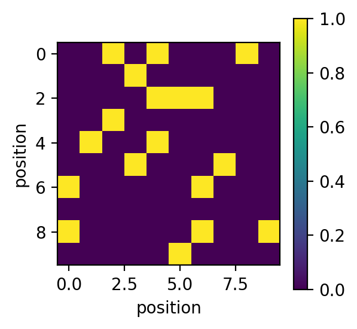 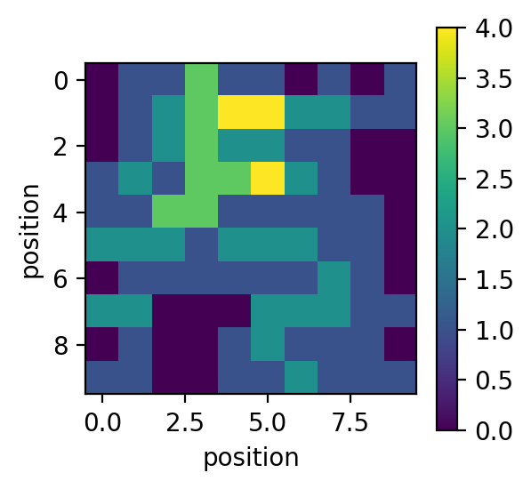
{kind=link}
{kind=link}
-
ampartrafficking.stochastic_model.kBUcoop(kBU, NN, PSD, typeID, beta=1.0)[source] Returns the cooperative unbinding rate per bound receptor.
- Parameters
- kBUfloat
unbinding rate
- betafloat, optional
By default beta=1.0. Factor by which the fraction of occupied nearest neighbours lowers the unbinding rate.
- NNarray_like
Matrix that contains the number of nearest neighbours for each grid element.
- PSDarray_like
Matrix representing the PSD grid
- typeIDfloat>0
Receptor-type ID.
- Returns
- out: array_like
Matrix containing the unbinding rates at each occupied grid element.
Examples
Import libraries:
>>> import numpy as np >>> import matplotlib.pyplot as plt >>> import ampartrafficking.stochastic_model as sm
Create and populate grid and calculate nearest neighbour matrix:
>>> kBU=0.1 >>> typeID=2 >>> N=10 >>> PSD=np.zeros((N,N)) >>> PSD[np.random.randint(0,N,20),np.random.randint(0,N,20)]=typeID >>> NN=sm.nearestNeighbours(PSD)
Plot:
>>> plt.figure(figsize=(4,3), dpi=150) >>> plt.plot(sm.kBUcoop(kBU, np.arange(0,9), np.array([typeID]*9), typeID)) >>> plt.xlabel('number of nearest neighbours') >>> plt.ylabel('unbinding rate $k_{BU}^{coop}$') >>> >>> fig=plt.figure(figsize=(3,2.25), dpi=150) >>> plt.imshow(PSD) >>> cbar=plt.colorbar() >>> cbar.set_label('occupied (type)', rotation=90, labelpad=10, y=0.5) >>> plt.xlabel('position') >>> plt.ylabel('position') >>> >>> fig=plt.figure(figsize=(3,2.25), dpi=150) >>> plt.imshow(NN) >>> cbar=plt.colorbar() >>> cbar.set_label('nearest neighbours', rotation=90, labelpad=10, y=0.5) >>> plt.xlabel('position') >>> plt.ylabel('position') >>> >>> fig=plt.figure(figsize=(3,2.25), dpi=150) >>> plt.imshow(sm.kBUcoop(kBU, NN, PSD, typeID)) >>> cbar=plt.colorbar() >>> cbar.set_label('unbinding rate $k_{BU}^{coop}$', rotation=90, labelpad=10, y=0.5) >>> plt.xlabel('position') >>> plt.ylabel('position')
Output:
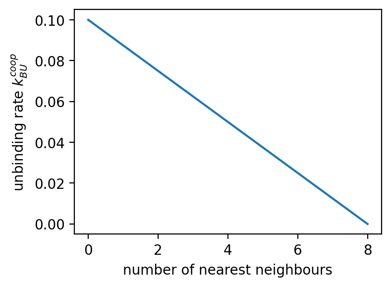 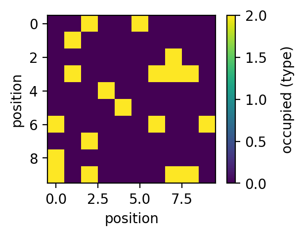 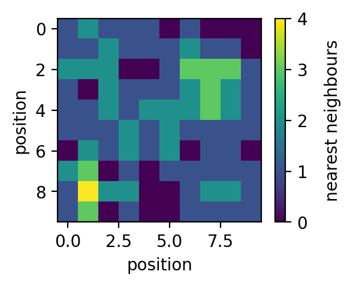 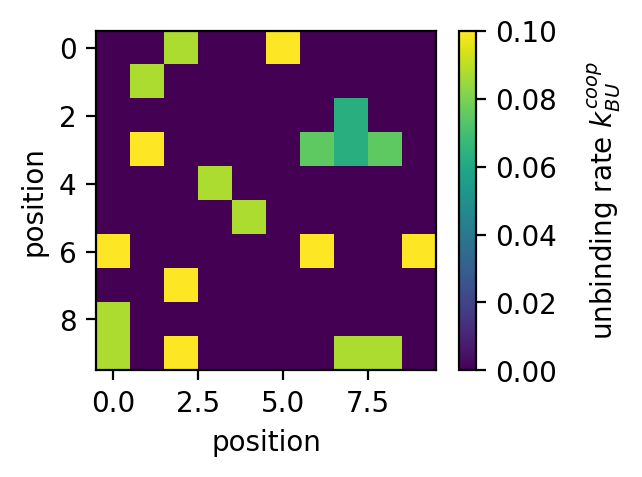
{kind=link}
{kind=link}
{kind=link}
{kind=link}
-
ampartrafficking.stochastic_model.kUBcoop(kUB, NN, PSD, alpha=16)[source] Returns the cooperative binding rate per mobile receptor.
- Parameters
- kUBfloat
binding rate
- alphafloat, optional
By default alpha=16. Factor by which the fraction of occupied nearest neighbours increases the binding rate.
- NNarray_like
Matrix that contains the number of nearest neighbours for each grid element.
- PSDarray_like
Matrix representing the PSD grid
- Returns
- out: array_like
Matrix containing the binding rates at each unoccupied grid element.
Examples
Import libraries:
>>> import numpy as np >>> import matplotlib.pyplot as plt >>> import ampartrafficking.stochastic_model as sm
Create and populate grid and calculate nearest neighbour matrix:
>>> kUB=0.0005 >>> N=10 >>> PSD=np.zeros((N,N)) >>> PSD[np.random.randint(0,N,20),np.random.randint(0,N,20)]=1 >>> NN=sm.nearestNeighbours(PSD)
Plot:
>>> plt.figure(figsize=(4,3), dpi=150) >>> plt.plot(sm.kUBcoop(kUB, np.arange(0,9), np.array([0]*9))) >>> plt.xlabel('number of nearest neighbours') >>> plt.ylabel('binding rate $k_{UB}^{coop}$') >>> >>> fig=plt.figure(figsize=(3,2.25), dpi=150) >>> plt.imshow(PSD) >>> cbar=plt.colorbar() >>> cbar.set_label('occupied (type)', rotation=90, labelpad=10, y=0.5) >>> plt.xlabel('position') >>> plt.ylabel('position') >>> >>> fig=plt.figure(figsize=(3,2.25), dpi=150) >>> plt.imshow(NN) >>> cbar=plt.colorbar() >>> cbar.set_label('nearest neighbours', rotation=90, labelpad=10, y=0.5) >>> plt.xlabel('position') >>> plt.ylabel('position') >>> >>> fig=plt.figure(figsize=(3,2.25), dpi=150) >>> plt.imshow(sm.kUBcoop(kUB, NN, PSD)) >>> cbar=plt.colorbar() >>> cbar.set_label('binding rate $k_{UB}^{coop}$', rotation=90, labelpad=10, y=0.5) >>> plt.xlabel('position') >>> plt.ylabel('position')
Output:
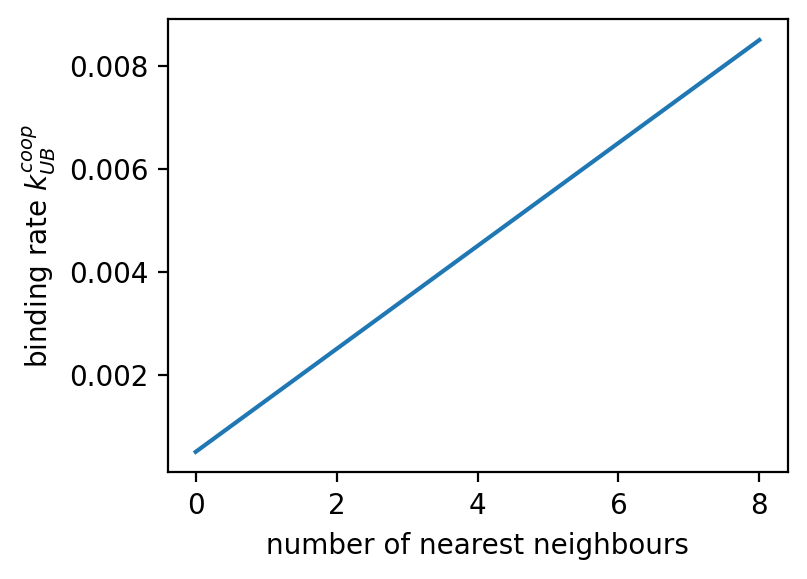 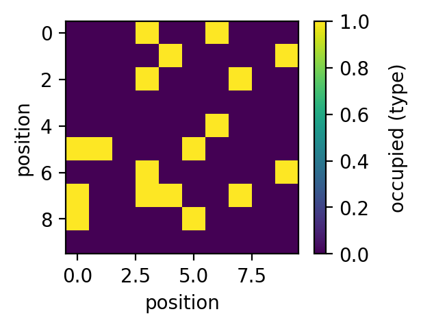 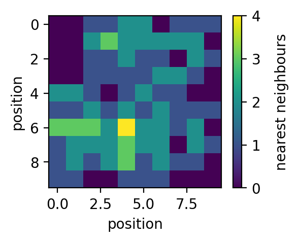
{kind=link}
{kind=link}
{kind=link}
-
ampartrafficking.stochastic_model.probabilityEval(Mub, Mbu, PSD, ID_basal, Mub_notBleached=None, Mbu_notBleached=None, ID_notBleached=None)[source] Returns the updated PSD Matrix and the corresponding number of receptors that got bound and unbound. To types, “basal” and “not bleached” can be considered, which is necessary when simulation FRAP.
- Parameters
- Mubarray_like
Matrix containing binding probabilities for the type “basal”.
- Mbuarray_like
Matrix containing unbinding probabilities for the type “basal”.
- Mub_notBleachedarray_like, optional
By default None. Matrix containing binding probabilities for the type “not bleached”.
- Mbu_notBleachedarray_like, optional
By default None. Matrix containing unbinding probabilities for the type “not bleached”.
- PSDarray_like
Matrix representing the PSD grid and its bound receptors.
- ID_basalfloat
Receptor ID of the basal pool.
- ID_notBleached: float
Receptor ID of the not bleached pool.
- Returns
- out: float, float, float, float, array_like
Number of receptors that got bound and unbound of the two types “basal” and “not bleached” and the updated PSD matrix.
Examples
Import libraries:
>>> import numpy as np >>> import matplotlib.pyplot as plt >>> import ampartrafficking.stochastic_model as sm
Set parameters:
>>> U=10 >>> U_notBleached=10 >>> kUB=0.005 >>> kBU=1 >>> N=10 >>> ID_basal=1 >>> ID_notBleached=2 >>> dt=0.5
Create and populate grid and calculate nearest neighbour matrix:
>>> PSD=np.zeros((N,N)) >>> while np.sum(PSD)<20*ID_basal: >>> i=np.random.randint(0,N) >>> j=np.random.randint(0,N) >>> if PSD[i,j]==0: >>> PSD[i,j]=ID_basal >>> >>> while np.sum(PSD)<20*ID_basal+20*ID_notBleached: >>> i=np.random.randint(0,N) >>> j=np.random.randint(0,N) >>> if PSD[i,j]==0: >>> PSD[i,j]=ID_notBleached >>> >>> NN=sm.nearestNeighbours(PSD)
Plot PSD:
>>> plt.figure() >>> plt.imshow(PSD) >>> plt.colorbar()
Calculate probability Matrices and update the PSD Matrix:
>>> Mbu=sm.kBUcoop(kBU, NN, PSD, ID_basal)*dt >>> Mub=sm.kUBcoop(kUB*U, NN, PSD)*dt >>> Mbu_notBleached=sm.kBUcoop(kBU, NN, PSD, ID_notBleached)*dt >>> Mub_notBleached=sm.kUBcoop(kUB*U_notBleached, NN, PSD)*dt >>> >>> PSD,dBoff,dBon,dBoff_notBleached,dBon_notBleached=sm.probabilityEval(Mub,Mbu,PSD,ID_basal,Mub_notBleached,Mbu_notBleached,ID_notBleached)
Plot PSD:
>>> plt.figure() >>> plt.imshow(PSD) >>> plt.colorbar()
Output: (left: before, right: after)
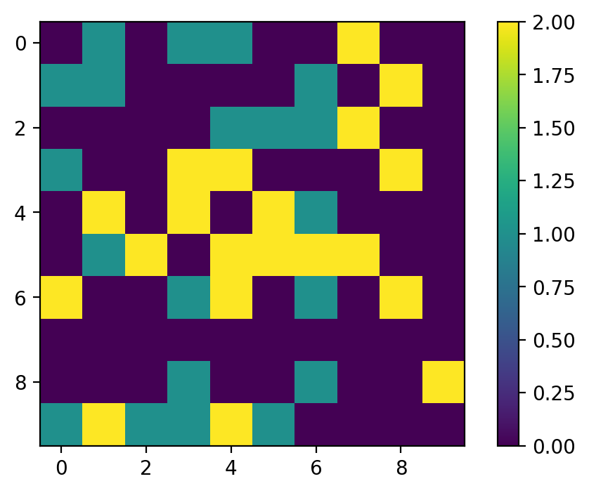 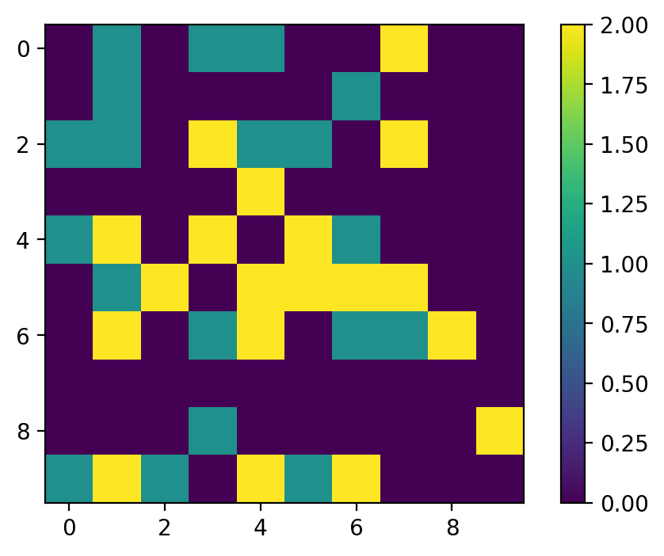
{kind=link}
{kind=link}
-
ampartrafficking.stochastic_model.update_mobilePool(U, pin, pout, dBoff, dBon, U_notBleached=None, pin_notBleached=None, pout_notBleached=None, dBoff_notBleached=None, dBon_notBleached=None)[source] Updates the value for the mobile receptor pool. When simulating FRAP, a second type “not bleached” is considered.
- Parameters
- Ufloat
Mobile AMPAR pool.
- pinfloat
Probability of a receptor to enter the spine’s mobile pool.
- poutfloat
Probability of a receptor to leave the spine’s mobile pool.
- dBofffloat
Number of receptors that got unbound from the PSD grid.
- dBonfloat
Number of receptors that got bound to the PSD grid.
- U_notBleachedfloat, optional
Mobile AMPAR pool (bleached).
- pin_notBleachedfloat, optional
Probability of a not bleached receptor to enter the spine’s mobile pool.
- pout_notBleachedfloat, optional
Probability of a not bleached receptor to enter the spine’s mobile pool.
- dBoff_notBleachedfloat, optional
Number of not bleached receptors that got unbound from the PSD grid.
- dBon_notBleachedfloat, optional
Number of not bleached receptors that got bound to the PSD grid.
- Returns
- out: float, float
U, U_notBleached.
-
ampartrafficking.stochastic_model.calcTimeStep(UFP_0, A_spine, kUB, alpha, kBU, kout, kin)[source] Returns integration time step dt. By default simulations are carried out at dt=0.5s. If parameter choices require a smaller time step, dt is set to 0.25s. If dt is still too large, the simulation is cancelled and an error message is displayed. In this case dt needs to be set manually.
- Parameters
- UFP_0float
Mobile receptor pool fixed points. Sets the influx of receptors into spine.
- A_spinefloat
Spine surface area.
- kUBfloat
bidning rate
- alphafloat
cooperativity factor for the binding
- kBUfloat
unbidning rate
- koutfloat
Total rate at which receptors exit the spine membrane (e.g. kout+kendo).
- kinfloat
Total rate at which receptors enter the spine membrane (e.g. kexo*Sexo+kin).
- Returns
- float
Integration time step dt.
frap
Created on Thu Nov 5 15:35:31 2020
@author: Moritz
-
ampartrafficking.frap.FRAP(N_List, Conc_List, beta, alpha, kUB, kBU, duration, Nr_Trials)[source] Returns evolution over time of photobleached and not photobleached mobile and bound receptors (FRAP simulation).
- Parameters
- N_Listarray_like
List of PSD sizes P
- Conc_Listarray_like
List of target fixed points for the mobile receptor concentration. Sets the influx of receptors into spine.
- betafloat
cooperativity factor for the unbinding. (Should be set to 1 or 0)
- alphafloat
cooperativity factor for the binding
- kUBfloat
bidning rate
- kBUfloat
unbidning rate
- durationfloat
Duration of the simulation
- Nr_Trialsinteger
Number of trials.
- Returns
- B_Narray_like
Time evolution of bound receptors for different conditions and number of Trials; shape(len(N_List), len(Conc_List), Trials, duration/0.5+1)
- U_Narray_like
Time evolution of mobile receptors for different conditions and number of Trials; shape(len(N_List), len(Conc_List), Trials, duration/0.5+1)
- B_notBleached_N
Time evolution of bound receptors not photobleached for different conditions and number of Trials; shape(len(N_List), len(Conc_List), Trials, duration/0.5+1)
- U_notBleached_N
Time evolution of mobile receptors not photobleached for different conditions and number of Trials; shape(len(N_List), len(Conc_List), Trials, duration/0.5+1)
- PSDarray_like
Matrix representing the PSD grid and its receptors at the end of the simulation (bleached, not bleached).
- Timearrayl_like
Time; shape(duration/0.5+1,)